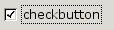
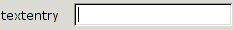
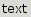
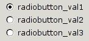
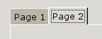
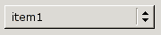
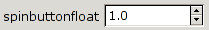
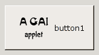

<html>
<head><title>GAI - Preference Window Generator Reference Manual</title>
<style type="text/css">
        .synopsis, .classsynopsis {
            background: #eeeeee;
            border: solid 1px #aaaaaa;
            padding: 0.5em;
        }
        .programlisting {
            background: #eeeeff;
            border: solid 1px #aaaaff;
            padding: 0.5em;
        }
        .variablelist {
            padding: 4px;
            margin-left: 3em;
        }
        .navigation {
            background: #ffeeee;
            border: solid 1px #ffaaaa;
            margin-top: 0.5em;
            margin-bottom: 0.5em;
        }
        .navigation a {
            color: #770000;
        }
        .navigation a:visited {
            color: #550000;
        }
        .navigation .title {
            font-size: 200%;
        }
      </style>
</head>
</html>

<body bgcolor="white" text="black" link="#0000FF" 
vlink="#840084" alink="#0000FF">


<table class="navigation" width="100%" summary="Navigation header" cellpadding="2" cellspacing="2">
<tr valign="middle">
<th width="100%" align="center">GAI - Preference Window Generator Reference Manual</th>
</tr></table>

<table class="navigation" width="100%" summary="Navigation header" cellpadding="2" cellspacing="2">
<tr valign="middle">


<h2>The purpose of the Preference Window generator</h2>

<a href="librarycalls.html#gtk">GTK+</a> is a very powerful and good library for creating
all kinds of windows with buttons, text entries and so on. However, for the applet's preference
window the functionallity is abit too much. You need to write alot of code just to have a
check box. So the purpose of this preference window generator is to generate a nicely formated
preference window based upon the applets wishes based upon just a few lines of code.
<p>
The idea is to fill a structure with the type of entries that you need for your applet and
tell the library at start-up that it should generate a preference window based upon the
given settings.
<p>

<p>
<h2>Behaviour and memory handeling</h2>
The memory handeling of the GAI preference window generator is quite odd. And also rather dangerous.
Most preference items returns some kind of data. In order to avoid memory leaks GAI will create, if
needed, the datastructure needed for the return values. <p>

For <tt>Integers</tt> and <tt>floats</tt> you shall pass a pointer to a such value. For <tt> char *</tt>
and <tt>GList *</tt> you shall only provide a pointer to a pointer that points towards <tt>NULL</tt>.

<br>Never free the result structure by you own!<br> 
Next time the preference window shall be shown the old result data will be freed.
<p>

Each time the user selects "Preferences" on the right button menu, GAI will generate the preference
window. It is done like this so the applet have a change to change settings or the preference
window as well.


<p>


<pre class="synopsis">

typedef enum {
    <a href="preferencewindow.html#GAI_END">GAI_END</a>             = 0x00,
    <a href="preferencewindow.html#GAI_CHECKBUTTON">GAI_CHECKBUTTON</a>     = 0x01,
    <a href="preferencewindow.html#GAI_TEXTENTRY">GAI_TEXTENTRY</a>       = 0x02,
    <a href="preferencewindow.html#GAI_TEXT">GAI_TEXT</a>            = 0x03,
    <a href="preferencewindow.html#GAI_FRAME">GAI_FRAME</a>		= 0x04,
    <a href="preferencewindow.html#GAI_RADIOBUTTON">GAI_RADIOBUTTON</a>     = 0x05,
    <a href="preferencewindow.html#GAI_SPINBUTTON">GAI_SPINBUTTON</a>      = 0x06,
    <a href="preferencewindow.html#GAI_COLORSELECTOR">GAI_COLORSELECTOR</a>   = 0x07,
    <a href="preferencewindow.html#GAI_HLINE">GAI_HLINE</a>           = 0x08,
    <a href="preferencewindow.html#GAI_FILESELECTOR">GAI_FILESELECTOR</a>    = 0x09,
    <a href="preferencewindow.html#GAI_NOTEBOOK">GAI_NOTEBOOK</a>	= 0x0A,
    <a href="preferencewindow.html#GAI_OPTIONMENU">GAI_OPTIONMENU</a>      = 0x0B,
    <a href="preferencewindow.html#GAI_PASSWORDENTRY">GAI_PASSWORDENTRY</a>   = 0x0C,
    <a href="preferencewindow.html#GAI_SPINBUTTON_FLOAT">GAI_SPINBUTTON_FLOAT</a> = 0x0D,
    <a href="preferencewindow.html#GAI_COMBO">GAI_COMBO</a>           = 0x0E,
    <a href="preferencewindow.html#GAI_ALL_LEFT">GAI_ALL_LEFT</a>        = 0x0F,
    <a href="preferencewindow.html#GAI_ALL_CENTER">GAI_ALL_CENTER</a>      = 0x10,
    <a href="preferencewindow.html#GAI_ALL_RIGHT">GAI_ALL_RIGHT</a>       = 0x11,
    <a href="preferencewindow.html#GAI_FRAME_R">GAI_FRAME_R</a>		= 0x12,
    <a href="preferencewindow.html#GAI_FRAME_E">GAI_FRAME_E</a>		= 0x13,
    <a href="preferencewindow.html#GAI_NOTEBOOK_E">GAI_NOTEBOOK_E</a>	= 0x14,
    <a href="preferencewindow.html#GAI_BUTTON_TEXT">GAI_BUTTON_TEXT</a>     = 0x15,
    <a href="preferencewindow.html#GAI_BUTTON_STOCK">GAI_BUTTON_STOCK</a>    = 0x16,
    <a href="preferencewindow.html#GAI_BUTTON_IMAGE">GAI_BUTTON_IMAGE</a>    = 0x17,
    <a href="preferencewindow.html#GAI_LISTSTORE">GAI_LISTSTORE</a>    = 0x18,
    <a href="preferencewindow.html#GAI_EDITLISTSTORE">GAI_EDITLISTSTORE</a>    = 0x19,

    /* Flags */
    <a href="preferencewindow.html#GAI_LEFT">GAI_LEFT</a>            = 0x40<<0,
    <a href="preferencewindow.html#GAI_RIGHT">GAI_RIGHT</a>		= 0x40<<1,
    <a href="preferencewindow.html#GAI_CENTER">GAI_CENTER</a>		= 0x40<<2,
    <a href="preferencewindow.html#GAI_NO_TEXT_MARKUP">GAI_NO_TEXT_MARKUP</a>	= 0x40<<3

} GaiPrefTypes;

</pre>


<h2>Structures</h2>

<h3><a name="gaipi"></a>GaiPI</h3><pre class="programlisting">
typedef struct {
    GaiPrefTypes type;
    void *name;
    void *default_val;
    void *result_val;
    void *extra;
} GaiPI;
</pre><p>
This structure is the core structure of the preference window. Each item that shall be added to the
preference window is configured via a <tt>GaiPI</tt> entry.
</p>

<h3><a name="gaiss"></a>GaiSS</h3><pre class="programlisting">
/* Gai Spinbutton Settings */
typedef struct {
    int min;
    int max;
    int step;
} GaiSS;
</pre><p>
</p>

<h3><a name="gaissf"></a>GaiSSF</h3><pre class="programlisting">
/* Gai Spinbutton Settings - Float*/
typedef struct {
    float min;
    float max;
    float step;
    int decimals;
} GaiSSF;
</pre><p>

</p>
<h3><a name="gaicolor"></a>GaiColor</h3><pre class="programlisting">
typedef struct {
    unsigned char r, g, b, alpha;
} GaiColor;
</pre>
<p>
This stucture is used for transfering colour information. <tt>GdkColor</tt> could not be used since it
lacks of <tt>alpha</tt> channel information. 

</p>

<hr>


<a name="Base">
<h3>Base</h3>
</a>
<br>

<div class="refsect2"><h3><a name="GAI_END"></a>GAI_END</h3><pre class="programlisting">
{GAI_END}
</pre></div>
Marks the end of the preference window structure. Must be the very last entry of a preference window structure.<br>

<div class="refsect2"><h3><a name="GAI_CHECKBUTTON"></a>GAI_CHECKBUTTON</h3>
<br>
<pre class="programlisting">
{GAI_CHECKBUTTON, label, default, result}
</pre></div>
Adds a <tt>checkbutton</tt> to the preference window. The <tt>default</tt> and the <tt>result</tt> value 
can either be <tt>TRUE</tt> or <tt>FALSE</tt>.
<div class="variablelist"><table border="0"><col align="left"><tbody>
<tr><td><span class="term"><i><tt>char *label</tt></i> :</span></td><td> The label of the check button.</td></tr>
<tr><td><span class="term"><i><tt>int *default</tt></i> :</span></td><td>Pointer to where the default value is stored.</td></tr>
<tr><td><span class="term"><span class="emphasis"><em>Returns</em></span> :</span></td><td></td></tr>
<tr><td><span class="term"><i><tt>int *result</tt></i> :</span></td><td>Pointer to where the result shall be stored.</td></tr>
</tbody></table></div>
GAI assumes that the <tt>int</tt> where the <tt>result</tt> value shall be stored is already allocated. GAI will just write the result there, if
the pointer is not <tt>NULL</tt>.

<div class="refsect2"><h3><a name="GAI_TEXTENTRY"></a>GAI_TEXTENTRY</h3>
<br>
<pre class="programlisting">
{GAI_TEXTENTRY, label, default, result}
</pre></div>
Adds a <tt>textentry</tt> to the preference window.
<div class="variablelist"><table border="0"><col align="left"><tbody>
<tr><td><span class="term"><i><tt>char *label</tt></i> :</span></td><td>The label of the text entry.</td></tr>
<tr><td><span class="term"><i><tt>char **default</tt></i> :</span></td><td>Double pointer to where the default text entry is stored.</td></tr>
<tr><td><span class="term"><span class="emphasis"><em>Returns</em></span> :</span></td><td></td></tr>

<tr><td><span class="term"><i><tt>char **result</tt></i> :</span></td><td>Double pointer to where the result shall be stored.</td></tr>
</tbody></table></div>
If the last pointer of the <tt>result</tt> double pointer is <tt>NULL</tt>, a new buffer is allocated, while 
if it points to something <tt>g_free</tt> will be used on that data, and later new buffer will be allocated.
This hinter the preference window generator to leak memory when the preferences window is started many times.


<div class="refsect2"><h3><a name="GAI_TEXT"></a>GAI_TEXT</h3>
<br>
<pre class="programlisting">
{GAI_TEXT, label}
</pre></div>
Shows a line of text.
<div class="variablelist"><table border="0"><col align="left"><tbody>
<tr><td><span class="term"><i><tt>char *label</tt></i> :</span></td><td>The text that shall be displayed.</td></tr>
</tbody></table></div>


<div class="refsect2"><h3><a name="GAI_FRAME"></a>GAI_FRAME</h3>
<br>
<pre class="programlisting">
{GAI_FRAME, label}
</pre></div>

This command starts a new frame. It means that all following commands until a <tt>GAI_FRAME_E</tt> is found
will be added into it. Several deep levels of frames is accepted.
<div class="variablelist"><table border="0"><col align="left"><tbody>
<tr><td><span class="term"><i><tt>char *label</tt></i> :</span></td><td>The name of the frame.</td></tr>
</tbody></table></div>


<div class="refsect2"><h3><a name="GAI_RADIOBUTTON"></a>GAI_RADIOBUTTON</h3>
<br>
<pre class="programlisting">
{GAI_RADIOBUTTON, names, default, result}
</pre></div>

<div class="variablelist"><table border="0"><col align="left"><tbody>
<tr><td><span class="term"><i><tt>char ***names</tt></i> :</span></td><td>.</td></tr>
<tr><td><span class="term"><i><tt>int *default</tt></i> :</span></td><td>.</td></tr>
<tr><td><span class="term"><span class="emphasis"><em>Returns</em></span> :</span></td><td></td></tr>

<tr><td><span class="term"><i><tt>int *result</tt></i> :</span></td><td>.</td></tr>
</tbody></table></div>

<div class="refsect2"><h3><a name="GAI_SPINBUTTON"></a>GAI_SPINBUTTON</h3>
<br>
<pre class="programlisting">
{GAI_SPINBUTTON}
</pre></div>

<div class="refsect2"><h3><a name="GAI_COLORSELECTOR"></a>GAI_COLORSELECTOR</h3><pre class="programlisting">
{GAI_COLORSELECTOR}
</pre></div>

<div class="refsect2"><h3><a name="GAI_HLINE"></a>GAI_HLINE</h3>
<br>
<pre class="programlisting">
{GAI_HLINE}
</pre></div>

<div class="refsect2"><h3><a name="GAI_FILESELECTOR"></a>GAI_FILESELECTOR</h3><pre class="programlisting">
{GAI_FILESELECTOR}
</pre></div>

<div class="refsect2"><h3><a name="GAI_NOTEBOOK"></a>GAI_NOTEBOOK</h3>
<br>
<pre class="programlisting">
{GAI_NOTEBOOK}
</pre></div>

<div class="refsect2"><h3><a name="GAI_OPTIONMENU"></a>GAI_OPTIONMENU</h3>
<br>
<pre class="programlisting">
{GAI_OPTIONMENU}
</pre></div>

<div class="refsect2"><h3><a name="GAI_PASSWORDENTRY"></a>GAI_PASSWORDENTRY</h3><pre class="programlisting">
{GAI_PASSWORDENTRY}
</pre></div>

<div class="refsect2"><h3><a name="GAI_SPINBUTTON_FLOAT"></a>GAI_SPINBUTTON_FLOAT</h3>
<br>
<pre class="programlisting">
{GAI_SPINBUTTON_FLOAT}
</pre></div>

<div class="refsect2"><h3><a name="GAI_COMBO"></a>GAI_COMBO</h3>
<br>
<pre class="programlisting">
{GAI_COMBO}
</pre></div>

<div class="refsect2"><h3><a name="GAI_ALL_LEFT"></a>GAI_ALL_LEFT</h3><pre class="programlisting">
{GAI_ALL_LEFT}
</pre></div>

<div class="refsect2"><h3><a name="GAI_ALL_CENTER"></a>GAI_ALL_CENTER</h3><pre class="programlisting">
{GAI_ALL_CENTER}
</pre></div>

<div class="refsect2"><h3><a name="GAI_ALL_RIGHT"></a>GAI_ALL_RIGHT</h3><pre class="programlisting">
{GAI_ALL_RIGHT}
</pre></div>

<div class="refsect2"><h3><a name="GAI_FRAME_R"></a>GAI_FRAME_R</h3><pre class="programlisting">
{GAI_FRAME_R}
</pre></div>

<div class="refsect2"><h3><a name="GAI_FRAME_E"></a>GAI_FRAME_E</h3><pre class="programlisting">
{GAI_FRAME_E}
</pre></div>

<div class="refsect2"><h3><a name="GAI_NOTEBOOK_E"></a>GAI_NOTEBOOK_E</h3><pre class="programlisting">
{GAI_NOTEBOOK_E}
</pre></div>

<div class="refsect2"><h3><a name="GAI_BUTTON_TEXT"></a>GAI_BUTTON_TEXT</h3>
<br>
<pre class="programlisting">
{GAI_BUTTON_TEXT}
</pre></div>

<div class="refsect2"><h3><a name="GAI_BUTTON_STOCK"></a>GAI_BUTTON_STOCK</h3>
<br>
<pre class="programlisting">
{GAI_BUTTON_STOCK}
</pre></div>

<div class="refsect2"><h3><a name="GAI_BUTTON_IMAGE"></a>GAI_BUTTON_IMAGE</h3>
<br>
<pre class="programlisting">
{GAI_BUTTON_IMAGE}
</pre></div>

<h3>Flags</h3>

<div class="refsect2"><h3><a name="GAI_LEFT"></a>GAI_LEFT</h3><pre class="programlisting">
{|GAI_LEFT}
</pre></div>

<div class="refsect2"><h3><a name="GAI_RIGHT"></a>GAI_RIGHT</h3><pre class="programlisting">
{|GAI_RIGHT}
</pre></div>

<div class="refsect2"><h3><a name="GAI_CENTER"></a>GAI_CENTER</h3><pre class="programlisting">
{|GAI_CENTER}
</pre></div>

<div class="refsect2"><h3><a name="GAI_NO_TEXT_MARKUP"></a>GAI_NO_TEXT_MARKUP</h3><pre class="programlisting">
{|GAI_NO_TEXT_MARKUP}
</pre></div>


<br>
<div class="refsect2"><h3><a name="gai-init2"></a>gai_init2()</h3><pre class="programlisting">
int            gai_init2                           (<a href="referenceguide.html#gaiapplet">GaiApplet*</a> applet_info, 
                                                    int *argc, 
                                                    char ***argv);
</pre></div>

<p>
This will replace <tt><a href="referenceguide.html#gai-init">gai_init</a></tt> in GAI version 0.6.0 and later.  
<tt>gai_init2</tt> provides more information than <tt><a href="referenceguide.html#gai-init">gai_init</a></tt> in order to make it possible to automatically
generate an About box. Together with the current template <tt>configure</tt> and <tt>Makefile</tt> scripts 
most of the information there will be used to generate the <a href="referenceguide.html#gaiapplet">GaiApplet*</a> structure. 
Otherwise <tt>gai_init2</tt> does about the same thing as <tt><a href="referenceguide.html#gai-init">gai_init</a></tt>.
</p>


<div class="variablelist"><table border="0"><col align="left"><tbody>
<tr><td><span class="term"><i><tt>*applet_info</tt></i> :</span></td><td>A struct with information about the applet.
If you use the GAI template scripts, this information is provided in <tt>config.h</tt> that is generated by the <tt>configure</tt> script.
</td></tr>
<tr><td><span class="term"><i><tt>*argc</tt></i> :</span></td><td>Pointer to the argc provided to the main function.</td></tr>
<tr><td><span class="term"><i><tt>***argv</tt></i> :</span></td><td>Pointer to the **argv provided to the main function.</td></tr><tr><td><span class="term"><span class="emphasis"><em>Returns</em></span> :</span></td><td>0 if everything went well.</td></tr>
</tbody></table></div>


<hr>
<i>Errors in this document? Need help? Then mail me, Jonas Aaberg, cja@gmx.net.</i><br>
</div>

</body>
</html>